見放題の作品
🎬 映画35作品
見放題
アイカツ！×プリパラ
★4.4（1,761件）
アニメ映画・2025年・75分
くわしく見る ›
見放題
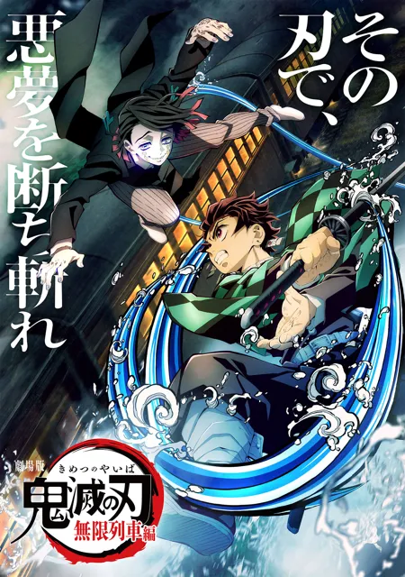
劇場版「鬼滅の刃」無限列車編
★4.0（179,480件）
アニメ映画・2020年・116分
くわしく見る ›
見放題
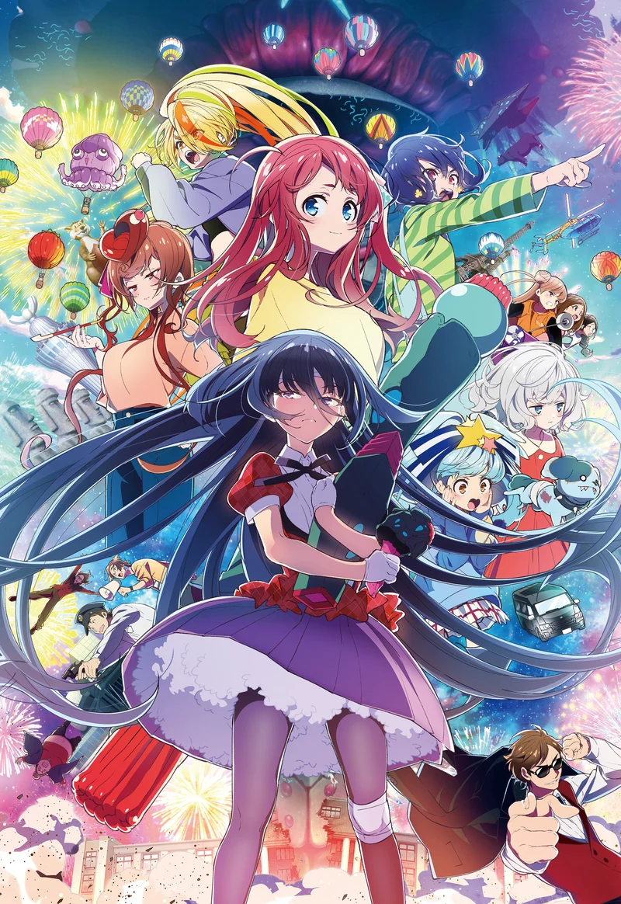
劇場版『ゾンビランドサガ ゆめぎんがパラダイス』
★4.2（2,258件）
アニメ映画・2025年・120分
くわしく見る ›
見放題
君の名は。
★3.9（489,386件）
アニメ映画・2016年・106分
くわしく見る ›
見放題
すずめの戸締まり
★3.8（213,992件）
アニメ映画・2022年・121分
くわしく見る ›
見放題
天気の子
★3.7（271,859件）
アニメ映画・2019年・112分
くわしく見る ›
見放題
劇場版 呪術廻戦 0
★4.0（161,236件）
アニメ映画・2021年・104分
くわしく見る ›
見放題
トップガン マーヴェリック
★4.4（201,863件）
洋画・2022年・130分
くわしく見る ›
見放題
おいしい給食 炎の修学旅行
★4.1（2,808件）
邦画・2025年・114分
くわしく見る ›
見放題
劇場版 SPY×FAMILY CODE: White
★3.7（37,788件）
アニメ映画・2023年・110分
くわしく見る ›
見放題
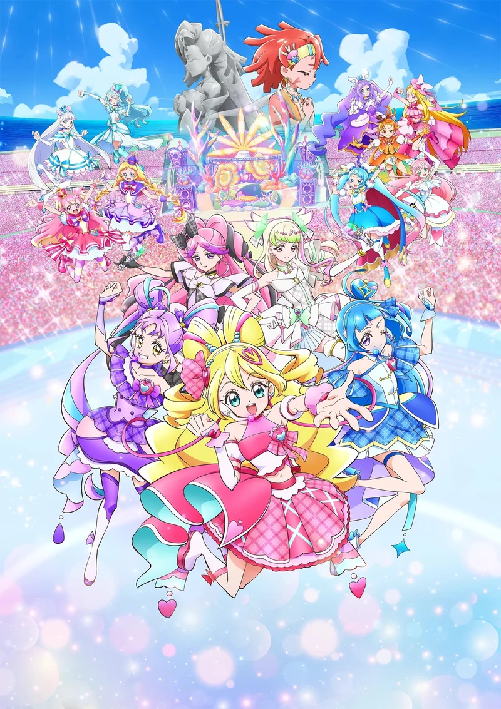
映画キミとアイドルプリキュア♪
★4.1（1,892件）
アニメ映画・2025年・70分
くわしく見る ›
見放題
怪盗グルーのミニオン大脱走
★3.6（57,890件）
洋画・2017年・89分
くわしく見る ›
見放題
ワイルド・スピード SKY MISSION
★4.2（105,542件）
洋画・2015年・137分
くわしく見る ›
見放題
劇場版「進撃の巨人」完結編
★4.5（11,525件）
アニメ映画・2024年・144分
くわしく見る ›
見放題
キングダム2 遥かなる大地へ
★3.8（92,531件）
邦画・2022年・134分
くわしく見る ›
見放題
劇場版ハイキュー!! ゴミ捨て場の決戦
★4.2（70,488件）
アニメ映画・2024年・84分
くわしく見る ›
見放題
劇場版ブルーロック -EPISODE 凪-
★3.5（12,974件）
アニメ映画・2024年・90分
くわしく見る ›
見放題
ミッション：インポッシブル
★3.8（119,615件）
洋画・1996年・110分
くわしく見る ›
見放題
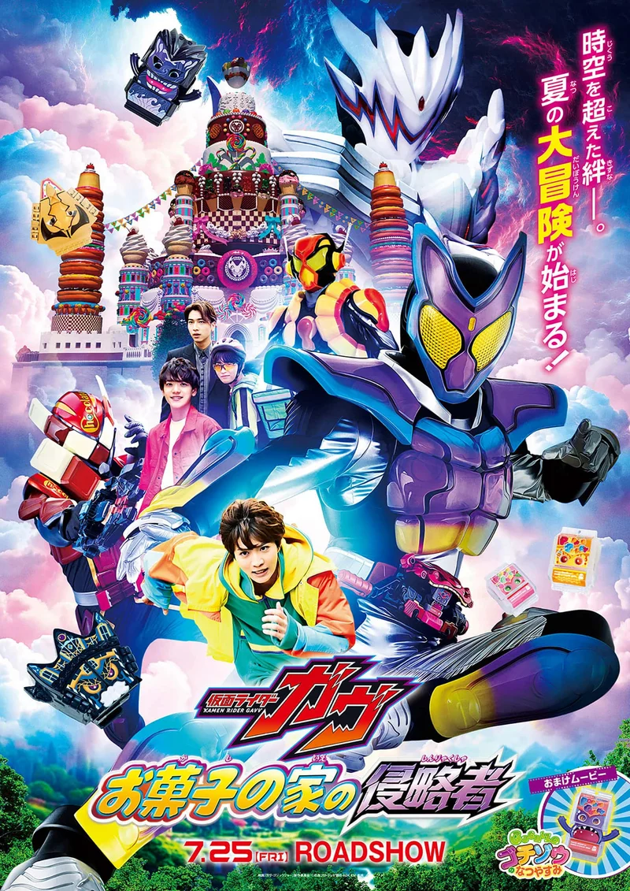
仮面ライダーガヴ お菓子の家の侵略者
★4.0（2,336件）
邦画・2025年・58分
くわしく見る ›
見放題
るろうに剣心
★3.6（122,096件）
邦画・2012年・134分
くわしく見る ›
見放題
ショーシャンクの空に
★4.3（375,307件）
洋画・1994年
くわしく見る ›
見放題
鋼の錬金術師
★2.6（15,049件）
邦画・2017年・133分
くわしく見る ›
見放題
ザ・ファブル
★3.6（118,134件）
邦画・2019年・123分
くわしく見る ›
見放題
ジョン・ウィック
★3.8（171,598件）
洋画・2014年・101分
くわしく見る ›
見放題
『最終楽章 響け！ユーフォニアム』前編
★4.2（3,541件）
アニメ映画・2026年・120分
くわしく見る ›
見放題
すばらしき世界
★4.1（102,335件）
邦画・2020年
くわしく見る ›
見放題
ルックバック
★4.1（192,917件）
アニメ映画・2024年
くわしく見る ›
見放題
今夜、世界からこの恋が消えても
★4.0（36,419件）
邦画・2022年
くわしく見る ›
見放題
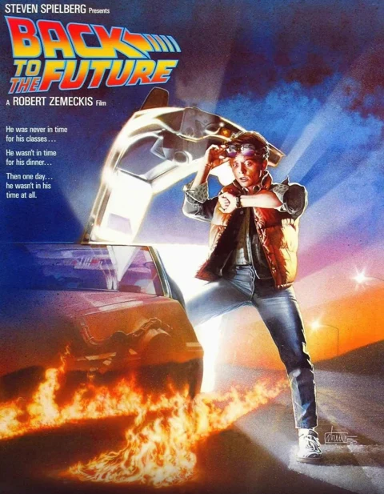
バック・トゥ・ザ・フューチャー
★4.3（290,055件）
洋画・1985年
くわしく見る ›
見放題
ミッドナイトスワン
★4.1（68,732件）
邦画・2020年
くわしく見る ›
見放題
愛がなんだ
★3.6（164,576件）
邦画・2018年
くわしく見る ›
見放題
ソラニン
★3.6（93,990件）
邦画・2010年
くわしく見る ›
見放題
カイジ 人生逆転ゲーム
★3.5（128,141件）
邦画・2009年
くわしく見る ›
見放題
土竜の唄 香港狂騒曲
★3.3（22,284件）
邦画・2016年
くわしく見る ›
見放題
ゴジラ-1.0
★3.9（148,909件）
邦画・2023年・124分
くわしく見る ›
📺 ドラマ31作品
見放題
復讐代行人３
★4.1（1,423件）
韓国ドラマ・2025年・全32話
くわしく見る ›
見放題
折腰
★4.1（239件）
海外ドラマ・2025年・全36話
くわしく見る ›
見放題
シン・イラン法律事務所
★4.0（1,012件）
韓国ドラマ・2026年・全16話
くわしく見る ›
見放題
100番の思い出
★4.0（1,224件）
韓国ドラマ・2025年・全12話
くわしく見る ›
見放題
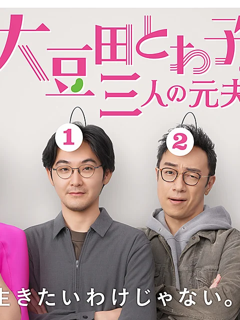
大豆田とわ子と三人の元夫
★4.4（65,219件）
国内ドラマ・2021年・全10話
くわしく見る ›
見放題
おいハンサム!!
★4.2（14,598件）
国内ドラマ・2022年・全8話
くわしく見る ›
見放題
勇者ヨシヒコと魔王の城
★4.2（20,822件）
国内ドラマ・2011年・全12話
くわしく見る ›
見放題
おっさんずラブ（2018）
★4.1（35,230件）
国内ドラマ・2018年・全7話
くわしく見る ›
見放題
時効警察
★4.1（9,579件）
国内ドラマ・2006年・全9話
くわしく見る ›
見放題
財閥家の末息子
★4.2（11,812件）
韓国ドラマ・2022年・全16話
くわしく見る ›
見放題
太陽の末裔 Love Under The Sun
★4.4（33,014件）
韓国ドラマ・2016年・全24話
くわしく見る ›
見放題
ドクターX
★4.1（10,846件）
国内ドラマ・2012年・全8話(第1シーズン)
くわしく見る ›
見放題
女神降臨
★4.2（18,768件）
韓国ドラマ・2020年・全26話
くわしく見る ›
見放題
哲仁王后
★4.2（6,317件）
韓国ドラマ・2021年・全20話
くわしく見る ›
見放題
赤い袖先
★4.0（4,527件）
韓国ドラマ・2021年・全36話
くわしく見る ›
見放題
ホテルデルーナ
★4.1（11,248件）
韓国ドラマ・2019年・全24話
くわしく見る ›
見放題
ウォーキング・デッド シーズン1
★4.2（30,855件）
海外ドラマ・2010年・シーズン1
くわしく見る ›
見放題
結婚できない男
★4.1（23,388件）
国内ドラマ・2006年・全12話
くわしく見る ›
見放題
名探偵モンク シーズン１
★4.3（922件）
海外ドラマ・2002年・全13話
くわしく見る ›
見放題
CSI：科学捜査班 シーズン1
★4.0（1,477件）
海外ドラマ・2000年・シーズン1
くわしく見る ›
見放題
ハヤブサ消防団
★3.8（13,233件）
国内ドラマ・2023年・全9話
くわしく見る ›
見放題
S.W.A.T. シーズン1
★4.0（1,877件）
海外ドラマ・2017年・シーズン1
くわしく見る ›
見放題
孤独のグルメ Season11
★3.7（650件）
国内ドラマ・2026年・全12話
くわしく見る ›
見放題
ジ・オファー / ゴッドファーザーに賭けた男
★4.4（1,635件）
海外ドラマ・2022年・全10話
くわしく見る ›
見放題
リーガルV
★3.6（3,373件）
国内ドラマ・2018年・全9話
くわしく見る ›
見放題
イエロージャケッツ シーズン１
★3.8（929件）
海外ドラマ・2021年・全10話
くわしく見る ›
見放題
南くんが恋人！？
★3.1（1,476件）
国内ドラマ・2024年・全8話
くわしく見る ›
見放題
瑞草洞＜ソチョドン＞
★4.0（2,356件）
韓国ドラマ・2025年・全12話
くわしく見る ›
見放題
ソンジェ背負って走れ
★4.4（14,512件）
韓国ドラマ・2024年・全16話
くわしく見る ›
見放題
警視庁アウトサイダー
★3.4（2,813件）
国内ドラマ・2023年・全9話
くわしく見る ›
見放題
フロム -閉ざされた街-
★3.9（1,745件）
海外ドラマ・2022年・シーズン1〜4配信中
くわしく見る ›
✨ アニメ12作品
見放題
SPY×FAMILY
★4.1（55,222件）
シーズン1〜3、劇場版も見放題
くわしく見る ›
見放題
ハイキュー!!
★4.4（44,769件）
1期〜TO THE TOPほか、劇場
くわしく見る ›
見放題
キングダム
★4.1（10,961件）
第1〜6シリーズ
くわしく見る ›
見放題
ブルーロック
★4.1（29,122件）
第1期24話・VS. U-20 JA
くわしく見る ›
見放題
SAKAMOTO DAYS
★3.7（16,427件）
全22話
くわしく見る ›
見放題
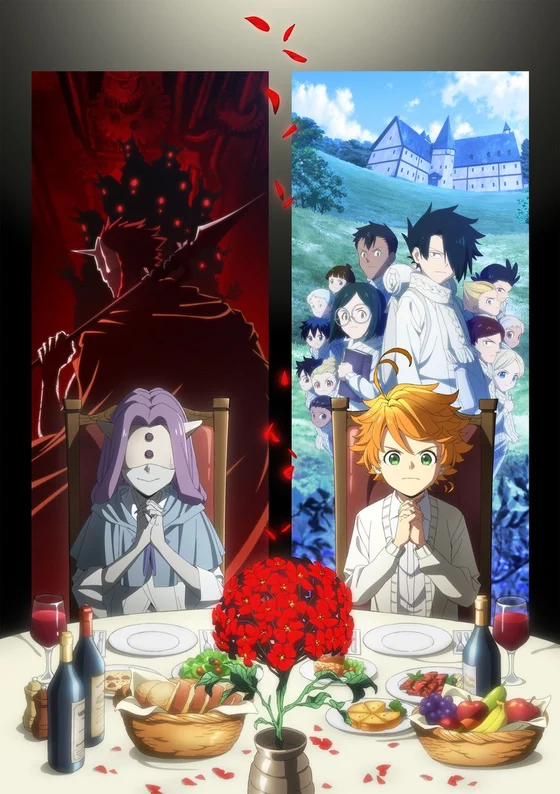
約束のネバーランド
★4.0（42,569件）
シーズン1・2
くわしく見る ›
見放題
僕の心のヤバイやつ
★4.1（9,449件）
12話・13話の2シーズン
くわしく見る ›
見放題
彼女、お借りします
★3.7（8,432件）
シーズン1・3〜5
くわしく見る ›
見放題
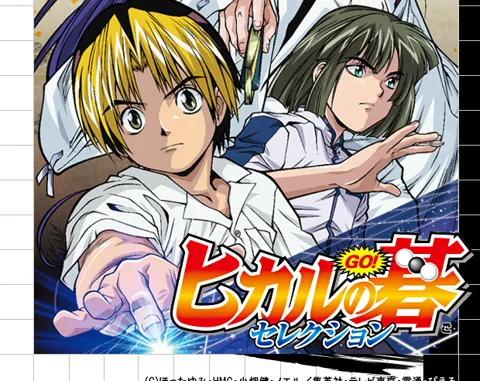
ヒカルの碁
★4.3（4,685件）
全75話
くわしく見る ›
見放題
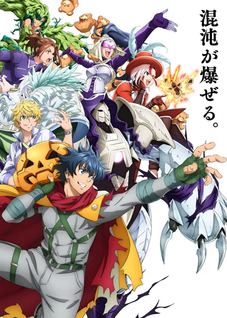
シャングリラ・フロンティア
★3.8（6,747件）
シーズン1・2
くわしく見る ›
見放題
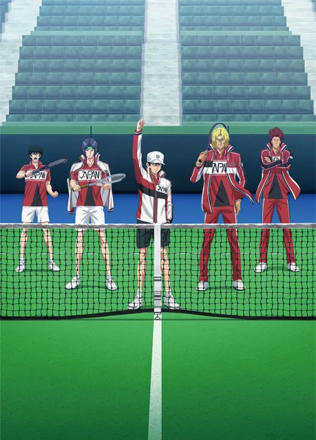
新テニスの王子様
★3.9（2,003件）
13話・U-17 WORLD CUP
くわしく見る ›
見放題
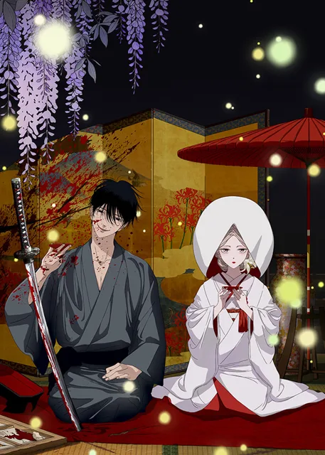
ホタルの嫁入り
★3.9（1,319件）
毎週土曜に更新中
くわしく見る ›
ポイント作品（有料）は、見放題には含まれません。各作品ページで、見放題かポイント作品かを確認できます。
本ページの情報は2026年11月28日時点のものです。最新の配信状況はU-NEXTサイトにてご確認ください。配信状況は2026年11月28日にU-NEXTの公式サービスサイトで確認しました。配信は入れ替わるため、申し込む前に公式サイトで確認してください。